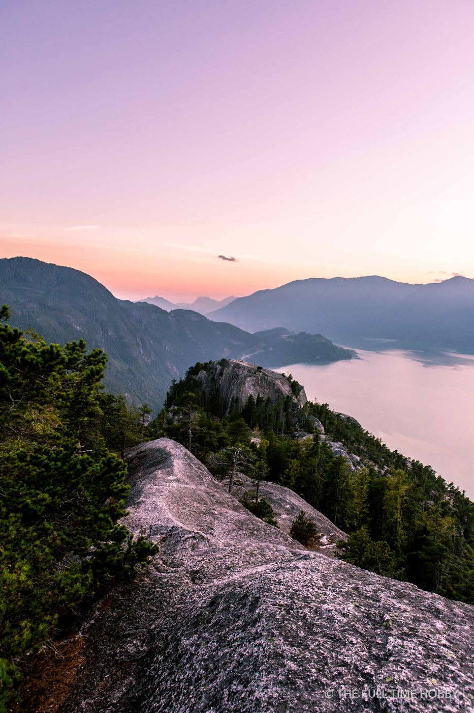
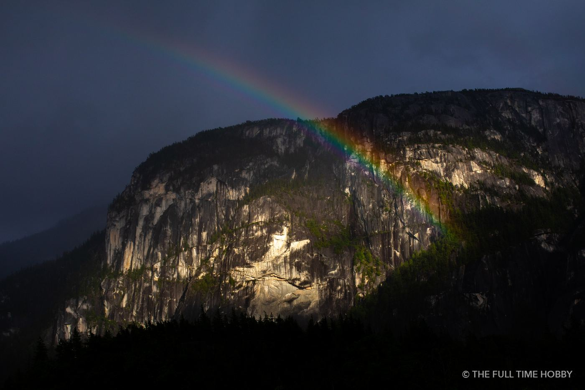
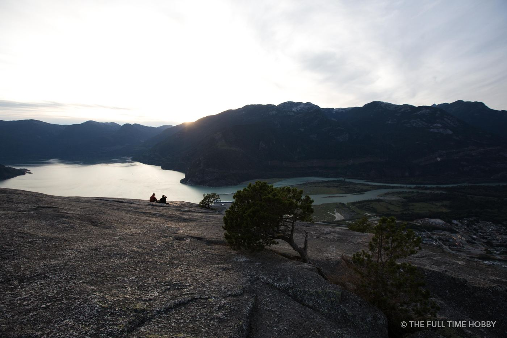
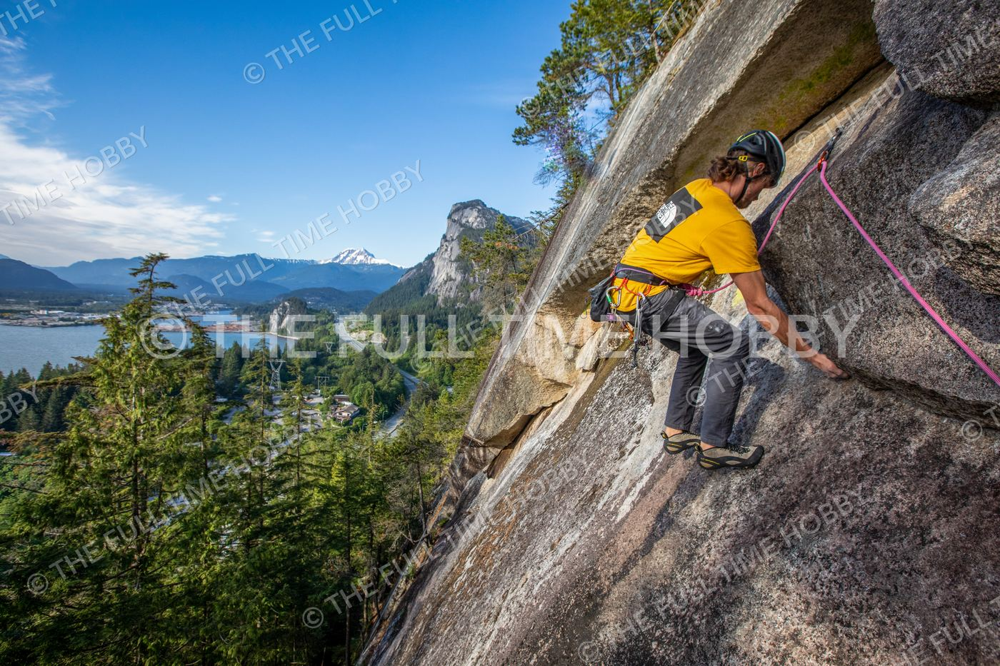

Respect the place
The Chief is a sacred site for the Squamish Nation, whose territory this is. Stay on marked trails, pack out everything you bring and treat it with the respect you would a place of worship.
Viewpoints
- From the highway and the parking areas for the classic wide view of the wall, especially in evening light.
- From the estuary and the water for reflections and distance. See our guide to photographing the estuary and Howe Sound.
- From the trail and the summits for long views of Howe Sound, the town and layered ridges.

Light through the seasons
- Spring: fresh green, waterfalls running and changeable skies.
- Summer: long evenings and warm light on the granite. Climb the trail early or late to avoid crowds and heat.
- Fall: clearing storms, low cloud in the Sound and new snow on the peaks.
- Winter: cold, clear mornings and fog drifting across the water. Trails can be icy: bring traction.

Weather is the secret
Clear blue days can look flat. The best pictures come with weather: clearing storms, rainbows, mist rolling through the trees. Watch the forecast and be ready to move quickly when the light changes.

Safety on the trail
- The trail up the Chief is steep, with stairs and chains. Wear proper footwear.
- Bring a headlamp if you’re hiking for sunrise or sunset. Never rely on your phone for light.
- Stay back from edges and don’t scramble onto exposed ledges for a photo.
- Be aware of climbers on the rock and of rockfall below the wall.
Climbers, highliners and scale
The Chief and the granite around it are a world-class climbing area, and highlining happens on its summits. Adding a person to a frame gives it scale, but ask first and keep a respectful distance. See Squamish adventure photography for more.

Want a print or a license?
Many of these photos are available as prints or stock licenses: see the stock library, or get in touch.